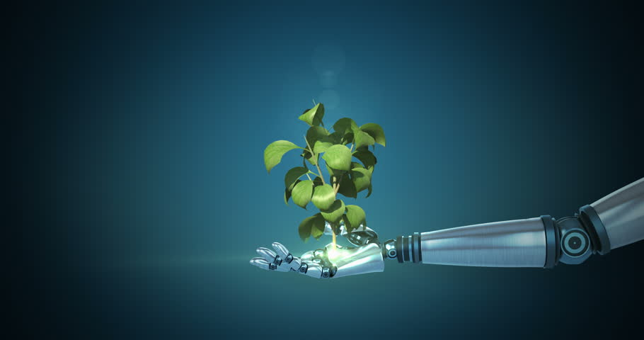
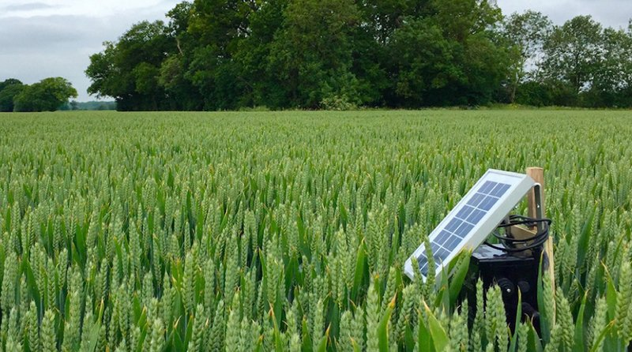

¿Quiénes somos?
Somos una empresa encargada de facilitar el monitoreo de cultivos a través de tecnología de Internet
de las Cosas.
Contamos con un grupo de expertos que trabajan constantemente para potenciar los cultivos Colombianos
a lo largo de todo el país.

Estamos compuestos de un grupo de ingenieros mecatrónicos, dispuestos a brindarte las oportunidades tecnológicas de punta en el sector de Internet de las Cosas y Domótica para cultivos.
La tecnología es nuestra pasión y el servicio al cliente nuestra prioridad.

En cualquier momento puedes buscarnos en nuestras redes sociales:

+57 320 000 00 00


¿Qué te ofrecemos?
Somos expertos en brindarte la mejor calidad de monitoreo de las variables más importantes de tu cultivo.
Siempre tendrás acceso a toda la información de tus sembrados y del historial de este a lo largo del tiempo.
De igual forma, te damos el acceso a servidores que te permimtirán sacar estadísticas de estos en tiempo real.
Siempre tendrás acceso a la valiosa información de las variables que nos indiques pertinentes.
Podrás obtener mejores rendimientos y experimentar con nuevos métodos para optimizar tu cultivo.

Desde cualquier dispositivo con conexión a internet puedes acceder. Todo el acceso está en tus manos.
¿Estás listo para comenzar esta aventura tecnológica de mano de nuestros expertos?
¿Estás preparado para aprovechar esta revolución tecnológica y sacar ventaja absoluta en el desempeño actual de todos tus cultivos como nunca antes se imaginó?
¡Clientes felices!
Tenemos clientes felices a lo largo de todo el país, gracias a nuestros servicios de alta calidad y la disposición de
nuestros trabajadores por el bienestar de los usuarios.
¡Te invitamos a hacer parte de esta familia de colombiamos que quieren sacar el mejor provecho de sus cultivos y los alcances de llevar estos a otro nivel nunca antes visto!
Nuestros usuarios son nuestra prioridad absoluta, lo que nos motiva a hacer de esta maravillosa plataforma un lugar cada vez mejor.
Te apoyamos en todo, desde instalación, hasta servicio al cliente.
"Me cambiaron la vida, gracias por el apoyo y los serivicios tecnológicos" Juan Guillermo Rodriguez.
Cada vez son más clientes con su testimonio de satisfacción.
"Desde el comienzo han hecho que mis cultivos tengan una calidad mejor, ahora estoy más tranquilo y con mayor comodidad desde mi hogar" Roberto Antonio Camacho.
Desde cualquier dispositivo con conexión a internet puedes acceder. Todo el acceso está en tus manos.
"Soy feliz gracias a ustedes" Timoteo Ramirez Coconaya.